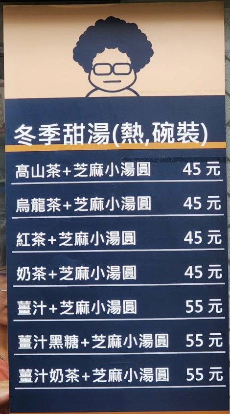
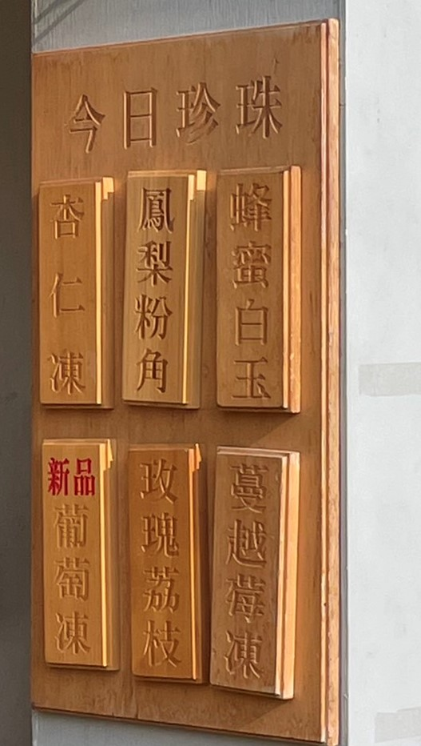

1.大俠台灣綠豆沙

地址：433台中市沙鹿區英才路16-1號
電話：0426332133
特別推薦
1.綠豆沙
2.花生沙+小麻糬
他的麻糬很特別，吃起來比粉角還軟Q一些。
2.上宇林
地址：435台中市梧棲區文化路二段61號
電話：0426565989
特別推薦
1.美人鮮奶茶+粉角
鮮奶類的都很推薦！尤其加上粉角，QQ有彈性的口感，每次都可以滿足想吃也想喝的心情，不管是冰的還是熱的都別有一番風味。
2.西施蘋果紅茶
近期推出的新品，一開始保持嚐鮮的態度去喝，結果發現喝起來超爽口！超級適合夏天解渴的需求。

3.湯姑凍奶茶

◎ 優惠:禮拜二飲品都有8折，一次買六杯可以折價25元
地址：433 臺中市台中市沙鹿區北英路162號
電話：0916033067
特別推薦
1.芝麻小湯圓
冬天限定推出，他湯的基底是用奶茶去製作的，也可以選擇是否要加薑汁，每次一到冬天必要來喝上一碗熱熱暖暖的小湯圓。
2.檸檬奶
他們家的檸檬蜜跟蔓越莓蜜都是堅持自己熬煮，不去買外面人家做好的。
4.豆漿紅茶
地址：台中市沙鹿區北勢東路555巷13號
電話：0426526663
特別推薦
1.冰淇淋紅茶
他的冰淇淋都是先挖好放在冰箱的，冰淇淋屬於很快融化的那種，所以如果想吃冰的話就必須一拿到就趕快喝了。
2.鮮奶茶
3.豆漿紅茶
豆漿都是老闆每天自己磨的豆子去做的，喝起來甜而不膩。
4.無糖綠茶
炎熱夏天推薦，900cc的容量讓人一次喝到滿足，無糖茶也是減肥人的福音，還有25元的超級划算價格。必買!
5.阿不綠豆沙專賣
地址：433台中市沙鹿區北勢東路548號
電話：0426521586
特別推薦
● 綠豆沙鮮奶+波霸
到阿不就是要買一杯涼快的綠豆沙阿，這也是他們的主打品，波霸是有嚼勁的那種，每次都讓人一口接一口的停不下來。
6.阿義傳統古早味鳳梨冰


(每天都有不同口味的波霸跟凍類，也可以相互混搭)
◎ 優惠每購買一杯可以集一個章，當集滿八點時，就可以免費兌換鳳梨果醬或飲品折30元的優惠。
地址：433台中市沙鹿區中山路263之3號
電話：0963791201
特別推薦
★ 配料(12種珍珠口味，招牌蜂蜜白玉，還有草莓、藍莓、黑糖、抹茶、芋頭、芒果、牛奶糖、蝶豆花、芝麻、辣椒及玫瑰，每天會推出三種口味的珍珠，其中招牌蜂蜜白玉是每天固定的口味:蒟蒻凍有四種口味，葡萄凍、柳橙凍、蔓越莓凍及桂花凍)
1.鳳黃奶茶
以鳳梨蜜加上黃金烏龍奶茶，清爽順口，連我不吃鳳梨的人也能接受！
2. 冬片青茶
他是青茶的一種，很爽口，尤其加上玫瑰荔枝凍，風味上又多了一個層次。
3.鳳梨金萱
以金萱茶為基底的飲料，並沒有被鳳梨的味道蓋過，金萱的香味有出來，兩者的比例調的很剛好，算是夏日解膩的好飲料。加蒟蒻凍可以增加口感，推薦給喜歡吃料的朋友。
4.鳳凰奶
不敢吃鳳梨的我第一次到店裡接受到老闆的熱情款待，試喝了鳳黃奶茶直接愛上，鳳梨自帶的甜跟奶茶的香搭配很剛好，甜度的話也可以調整，店內會有當天的配料清單可以加點，讓你每天都有開箱的感覺，真的可以嘗試喝看看！
7.華得來
地址：433台中市沙鹿區四平街59號
電話：0426631919
特別推薦
1.冰淇淋紅茶
喝起來特別濃醇，如果不知道要點甚麼，這個真的是大推。
2.混珍珠奶茶
他的混珍很特別，是芝麻波霸跟原味波霸去做混合的。
8.清水茶香
地址：436台中市清水區中山路114號
電話：0426234413
特別推薦
1.黑糖泰泰奶茶
他在泰奶裡面加入黑糖去提升韻味，喝起來跟其他飲料店的泰式奶茶不太一樣，雖然沒有到道地但還是蠻不錯的選擇。
2.冰淇淋紅茶
喝起來特別濃醇，如果不知道要點甚麼，這個真的是大推。
3.混珍珠奶茶
他的混珍很特別，是芝麻波霸跟原味波霸去做混合的。
4.薩姆紅•雪岩+豆乳糬糬
奶蓋喝起來不到綿密但味道是很剛好的鹹，豆乳糬糬的部分就有點太過於軟爛了。
9.慢慢喝
◎ 優惠:現在在下午兩點至下午四點有折價優惠，只要一次購買兩杯以上，一杯折10元，只要是鮮奶類加珍珠或是紅茶咖啡凍都不額外加價，現場優惠有買五送一。
地址：433台中市沙鹿區北勢東路570號
電話：0426521823
特別推薦
1.鮮乳鐵觀音
比起其他茶類，鐵觀音喝起來味道更濃更足。
2.泰式奶茶
喝起來味道稍嫌不足，茶味比較少。
10.楊桃伯
地址：433台中市沙鹿區中山路263之2號
電話：0958156131
特別推薦
冰涼的原味楊桃汁，極適合消暑，酸甜的口感讓人解渴，但如果不愛喝甜的人可能會不太適應，因為楊桃汁本身的味道夠濃，所以可以加一些水稀釋著喝是一樣好喝的！
11.樹下阿婆
★ 配料：粉圓、粉粿、梅子、綠豆、仙草
地址：433台中市沙鹿區中山路263之2號
電話：0958156131
特別推薦
一杯30，可以選1~3種料，梅子是每次來都一定會選的，他是用梅子汁下去加的，吃起來不會到酸但甜甜的，沒點就好像少了一個味。仙草是條狀的，其餘吃起來就是古早味～